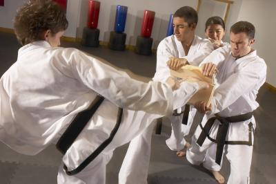

TaeKwon do
Taekwondo (태권도; 跆拳道; Korean pronunciation: [tʰɛkwʌndo]) is a Korean martial art and the national sport of South Korea. In Korean, tae (태, 跆) means "to strike or break with foot"; kwon (권, 拳) means "to strike or break with fist"; and do (도, 道) means "way", "method", or "path". Thus, taekwondo may be loosely translated as "the way of the hand and the foot." [1] The name taekwondo is also written as taekwon-do, tae kwon-do, or tae kwon do by various organizations, based on historical, philosophical, or political[citation needed] reasons. It combines combat techniques, self-defense, sport, exercise, and in some cases meditation and philosophy. In 1989, Taekwondo was the world's most popular martial art in terms of number of practitioners.[2] Gyeorugi (pronounced [ɡjʌɾuɡi]), a type of sparring, has been an Olympic event since 2000.

Early History of Taekwondo
The oldest Korean martial art was an amalgamation of unarmed combat styles developed by the three rival Korean Kingdoms of Goguryeo, Silla, and Baekje,[4] where young men were trained in unarmed combat techniques to develop strength, speed, and survival skills. The most popular of these techniques was subak, with taekkyeon being the most popular of the segments of subak. Those who demonstrated strong natural aptitude were selected as trainees in the new special warrior corps, called the Hwarang. It was believed that young men with a talent for the liberal arts may have the grace to become competent warriors. These warriors were instructed in academics as well as martial arts, learning philosophy, history, a code of ethics, and equestrian sports. Their military training included an extensive weapons program involving swordsmanship and archery, both on horseback and on foot, as well as lessons in military tactics and unarmed combat using subak. Although subak was a leg-oriented art in Goguryeo, Silla's influence added hand techniques to the practice of subak. During this time a few select Silla warriors were given training in taekkyeon by the early masters from Koguryo. These warriors then became known as the Hwarang. The Hwarang set up a military academy for the sons of royalty in Silla called Hwarang-do, which means "the way of flowering manhood." The Hwarang studied taekkyeon, history, Confucian philosophy, ethics, Buddhist morality, social skills and military tactics. The guiding principles of the Hwarang warriors were based on Won Gwang's five codes of human conduct and included loyalty, filial duty, trustworthiness, valor and justice. Taekkyeon was spread throughout Korea because the Hwarang traveled all around the peninsula to learn about the other regions and people.
Taekwondo in the present and Future
Taekwondo is known for its emphasis on kicking techniques, which distinguishes it from martial arts such as karate or southern styles of kung fu. The rationale is that the leg is the longest and strongest weapon a martial artist has, and kicks thus have the greatest potential to execute powerful strikes without successful retaliation. Historically, the Koreans thought that the hands were too valuable to be used in combat. Since taekwondo is developed in several different kwans, there are several different expressions of taekwondo philosophy. For example, the tenets of the ITF are said to be summed up by the last two phrases in the ITF Student Oath: "I shall be a champion of justice and freedom" and "I shall build a better and peaceful world." Two of the most popular systems of taekwondo are named solely after their respective organizations: the World Taekwondo Federation (WTF) and the International Taekwon-Do Federation (ITF). The WTF was founded in 1973, with roots in the KTA. The KTA Central Dojang had been opened in South Korea in 1972, and a few months later, the name was changed to the Kukkiwon. The following year, the WTF was formed. The International Olympic Committee recognized the WTF and taekwondo sparring in 1980.
Visit this link:Wikpedia Reference for Sambofor more reference material.